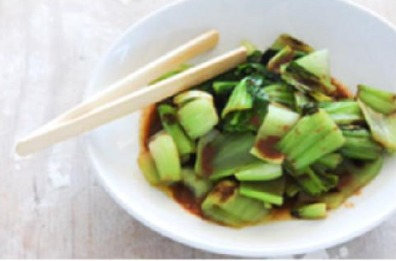

YOKO'S KITCHEN
JAPANESE COOKING CLASSES
|

Bok Choi
|
Japanese VegetarianFive week course in LondonA five week introduction to traditional Japanese vegetarian meals, teaching you a selection of rice and noodle dishes. |

Teriyaki Sauce
|
Sauces MasterclassOne day workshopAn intensive one-day course looking at how to create the most delicious sauces for use in a range of Japanese cookery. |
Popular Recipies
- Yakitori (grilled chicken)
- Tsukune (minced chicken patties)
- Okonomiyaki (savory pancakes)
- Mizutaki (chicken stew)
Contact
- Yoko's Kitchen
- 27 Redchurch Street
- Shoreditch
- London E2 7DP